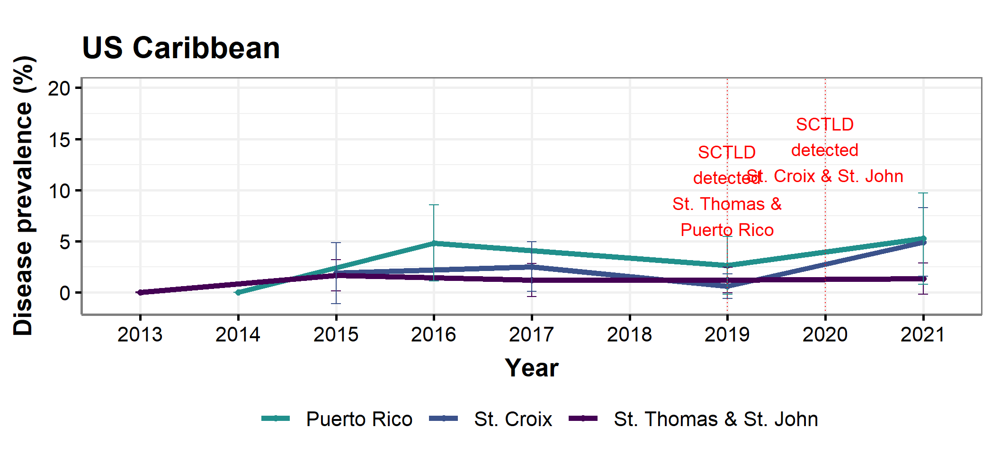

Click ‘code’ to view…………………………………………………………………………………………………………………………………..
## Initialize
# LIBRARIES
library(dplyr)
library(ncrmp.benthics.analysis)
library(magrittr)
library(ggplot2)
library(gridExtra)
library(cowplot)
library(viridis)
library(rcartocolor)
library(sp)
# Support functions
source("theme_publication.R")
source("labeler.R")Click ‘code’ to view…………………………………………………………………………………………………………………………………..
# YEAR DEPENDENT Objects (update as appropriate)
## Variables
samp_year <- max(ncrmp.benthics.analysis::USVI_2021_NTOT$YEAR)
current_year <- 2022
## Tables/Data frames
### Cover
STTSTJ_Cvr <- NCRMP_STTSTJ_2013_21_cover_region
STX_Cvr <- NCRMP_STX_2015_21_cover_region
PR_Cvr <- NCRMP_PRICO_2014_21_cover_region
# Density
STTSTJ_den <- NCRMP_STTSTJ_2013_21_density_region
STX_den <- NCRMP_STX_2015_21_density_region
PR_den <- NCRMP_PRICO_2014_21_density_region
# Old Mortality
STTSTJ_om <- NCRMP_STTSTJ_2013_21_old_mort_region
STX_om <- NCRMP_STX_2015_21_old_mort_region
PR_om <- NCRMP_PRICO_2014_21_old_mort_region
# Recent Mortality
STTSTJ_rm <- NCRMP_STTSTJ_2013_21_rec_mort_region
STX_rm <- NCRMP_STX_2015_21_rec_mort_region
PR_rm <- NCRMP_PRICO_2014_21_rec_mort_region
# Surface Area
STTSTJ_s <- NCRMP_STTSTJ_2013_21_col_size_region
STX_s <- NCRMP_STX_2015_21_col_size_region
PR_s <- NCRMP_PRICO_2014_21_col_size_region
### Bleaching
STTSTJ_ble_prev <- NCRMP_STTSTJ_2013_21_ble_prev_species_region
STX_ble_prev <- NCRMP_STX_2015_21_ble_prev_species_region
PR_ble_prev <- NCRMP_PRICO_2014_21_ble_prev_species_region
### Disease
STTSTJ_dis_prev <- NCRMP_STTSTJ_2013_21_dis_prev_species_region
STX_dis_prev <- NCRMP_STX_2015_21_dis_prev_species_region
PR_dis_prev <- NCRMP_PRICO_2014_21_dis_prev_species_region
# Occ Den CV
STTSTJ_Occ <- filter(NCRMP_STTSTJ_Occ_Den_CV ,
YEAR == samp_year)
STX_Occ <- filter(NCRMP_STX_Occ_Den_CV,
YEAR == samp_year)
PR_Occ <- filter(NCRMP_PRICO_Occ_Den_CV,
YEAR == samp_year)
STTSTJ_Occ_20 <- filter(NCRMP_STTSTJ_Occ_Den_CV_20 ,
YEAR == samp_year)%>%
dplyr::ungroup()
STX_Occ_20 <- filter(NCRMP_STX_Occ_Den_CV_20,
YEAR == samp_year)%>%
dplyr::ungroup()
PR_Occ_20 <- filter(NCRMP_PRICO_Occ_Den_CV_20,
YEAR == samp_year) %>%
dplyr::ungroup()
# Create a list of the species that have CV less that 20% for all Carib
spp_cv <- dplyr::bind_rows(STTSTJ_Occ_20 %>% select(YEAR, SPECIES_CD),
STX_Occ_20 %>% select(YEAR, SPECIES_CD),
PR_Occ_20 %>% select(YEAR, SPECIES_CD)) %>%
unique(.)
Carib_ESA <-NCRMP_Carib_ESA_FOI
# Weighted Means Inputs
# PR_NTOT <- PRICO_2021_NTOT
# USVI_NTOT <- USVI_2021_NTOT
#
# PR_Coral_Demo <- PRICO_2021_coral_demographics
# USVI_Coral_Demo <- USVI_2021_coral_demographics
#
# sampling_gridPR <- PRICO_2021_sample_frame_WGS1984
# colnames(sampling_gridPR@data)[11] = "SUB_REGION"
#
# PR_sampling_grid <- sampling_gridPR
# STTSTJ_sampling_grid <- STTSTJ_2021_sample_frame_WGS1984
# STX_sampling_grid <- STX_2021_sample_frame_WGS1984
#
# PR_sppdens <- NCRMP_PRICO_2014_21_density_species
# STTSTJ_sppdens <- NCRMP_STTSTJ_2013_21_density_species
# STX_sppdens <- NCRMP_STX_2015_21_density_species
# Yearly Site Prevalence
# STTSTJ_bd <- NCRMP_STTSTJ_2013_21_ble_prev_species_region
# STX_bd <- NCRMP_STX_2015_21_dis_ble_prev_species
# PR_bd <- NCRMP_PRICO_2014_21_dis_prev_siteClick ‘code’ to view functions……………………………………………………………………………………………………………………….
# FUNCTIONS
# Pull avCvr function
# Input is relevant region df, cover group (ex. NCRMP_PRICO_2014_19_cover_region, "Hard Corals")
# Output is avCvr for most recent year in df
pull_avCvr <- function (df, grouping) {
df |>
filter(cover_group == toupper(grouping) & YEAR == max(YEAR)) |>
pull(avCvr) |>
round(1)
}
# Pull SE function
# Input is relevant region df, cover group (ex. NCRMP_PRICO_2014_19_cover_region, "Hard Corals")
# Output is SE for most recent year in df
pull_se <- function(df, grouping) {
df |>
filter(cover_group == toupper(grouping) & YEAR == max(YEAR)) |>
pull(SE) |>
round(2)
}
#Pull Density & Mort. averages
pull_demo_av <- function (df) {
df |>
filter(YEAR == max(YEAR)) |>
pull(3) |>
round(1)
}
# Pull Density & Mort. SE
pull_demo_se <- function(df) {
df |>
filter(YEAR == max(YEAR)) |>
pull(SE) |>
round(2)
}
#Pull Size averages
pull_size_av <- function (df) {
df |>
filter(YEAR == max(YEAR)) |>
pull(avCm3) |>
round(1)
}
# Pull Size SE
pull_size_se <- function(df) {
df |>
filter(YEAR == max(YEAR)) |>
pull(SE_cm3) |>
round(2)
}
# Pull Top 3 Coral Bleach
pull_ble_prev <- function (df) {
df |>
filter(YEAR == max(YEAR)) |>
arrange(desc(avBlePrev)) |>
slice(1:3)
}
# Pull Top 3 Coral Disease
pull_dis_prev <- function (df) {
df |>
filter(YEAR == max(YEAR)) |>
arrange(desc(avDisPrev)) |>
slice(1:3)
}
# Pull Species FOI
pull_foi <- function(x, y) {
Carib_ESA |>
filter(species == x & region2 == y) |>
pull(foi) * 100 -> foi.x
ifelse(foi.x >= 10, round(foi.x,0),
ifelse(foi.x>1, round(foi.x,1),
round(foi.x, 2)))
}
# pull text
pull_text <- function(x) {
stringr::str_c(
"The", str_replace(
)
)
}Click ‘code’ to view variables……………………………………………………………………………………………………………………….
# BENTHIC VARIABLES
## Hard Corals Cover
### Puerto Rico Hard Coral avCvr
pr_hc_avCvr <- pull_avCvr(PR_Cvr, "Hard Corals")
### Puerto Rico Hard Coral SE
pr_hc_se <- pull_se(PR_Cvr, "Hard Corals")
### St. Thomas/John Hard Coral avCvr
sttstj_hc_avCvr <- pull_avCvr(STTSTJ_Cvr, "Hard Corals")
### St. Thomas/John Hard Coral SE
sttstj_hc_se <- pull_se(STTSTJ_Cvr, "Hard Corals")
### St. Croix Hard Coral avCvr
stx_hc_avCvr <- pull_avCvr(STX_Cvr, "Hard Corals")
### St. Croix Hard Coral SE
stx_hc_se <- pull_se(STX_Cvr, "Hard Corals")
## Macroalgae Cover
### Puerto Rico Macroalgae avCvr
pr_macroal_avCvr <- pull_avCvr(PR_Cvr, "Macroalgae")
### Puerto Rico Macroalgae SE
pr_macroal_se <- pull_se(PR_Cvr, "Macroalgae")
### St. Thomas/John Macroalgae avCvr
sttstj_macroal_avCvr <- pull_avCvr(STTSTJ_Cvr, "Macroalgae")
### St. Thomas/John Macroalgae SE
sttstj_macroal_se <- pull_se(STTSTJ_Cvr, "Macroalgae")
### St. Croix Macroalgae avCvr
stx_macroal_avCvr <- pull_avCvr(STX_Cvr, "Macroalgae")
### St. Croix Macroalgae SE
stx_macroal_se <- pull_se(STX_Cvr, "Macroalgae")
## Bleaching
sttstj_ble_top <- pull_ble_prev(STTSTJ_ble_prev)
stx_ble_top <- pull_ble_prev(STX_ble_prev)
pr_ble_top <- pull_ble_prev(PR_ble_prev)
## Disease
sttstj_dis_top <- pull_dis_prev(STTSTJ_dis_prev)
stx_dis_top <- pull_dis_prev(STX_dis_prev)
pr_dis_top <- pull_dis_prev(PR_dis_prev)
## Demographics
### Combined Occ Table
rbind(STTSTJ_Occ, STX_Occ) |>
rbind(PR_Occ) -> All_Occ
### Top 6 Occ
All_Occ |>
group_by(SPECIES_CD) |>
summarise(max_occ = max(occurrence)) |>
arrange(desc(max_occ)) |>
slice(1:6)->top_occ
### ESA
Carib_ESA |>
filter(region2 == "USVI") -> usvi_esa
Carib_ESA |>
filter(region2 == "PR")-> pr_esa
pr_esa |>
filter(species == "OANN" |species == "OFRA"|species == "OFAV" ) -> pr_esa_orb
### Density
pull_avDen <- function (df) {
df |>
filter(YEAR == max(YEAR)) |>
pull(avDen) |>
round(1)
}
### STTSTJ density, mortality
sttstj_avDen <- pull_demo_av(STTSTJ_den)
sttstj_avDen_se <- pull_demo_se(STTSTJ_den)
sttstj_avOM <- pull_demo_av(STTSTJ_om)
sttstj_avOM_se <- pull_demo_se(STTSTJ_om)
sttstj_avRM <- pull_demo_av(STTSTJ_rm)
sttstj_avRM_se <- pull_demo_se(STTSTJ_rm)
### and size
sttstj_avSize <- pull_size_av(STTSTJ_s)
sttstj_avSize_se <- pull_size_se(STTSTJ_s)
### STX density, mortality
stx_avDen <- pull_demo_av(STX_den)
stx_avDen_se <- pull_demo_se(STX_den)
stx_avOM <- pull_demo_av(STX_om)
stx_avOM_se <- pull_demo_se(STX_om)
stx_avRM <- pull_demo_av(STX_rm)
stx_avRM_se <- pull_demo_se(STX_rm)
### and size
stx_avSize <- pull_size_av(STX_s)
stx_avSize_se <- pull_size_se(STX_s)
### PRICO density, mortality
pr_avDen <- pull_demo_av(PR_den)
pr_avDen_se <- pull_demo_se(PR_den)
pr_avOM <- pull_demo_av(PR_om)
pr_avOM_se <- pull_demo_se(PR_om)
pr_avRM <- pull_demo_av(PR_rm)
pr_avRM_se <- pull_demo_se(PR_rm)
### and size
pr_avSize <- pull_size_av(PR_s)
pr_avSize_se <- pull_size_se(PR_s)Carib.plot.dis <- dplyr::bind_rows(NCRMP_STTSTJ_2013_21_dis_ble_prev_region %>% dplyr::mutate(REGION = "St. Thomas & St. John"),
NCRMP_STX_2015_21_dis_ble_prev_region %>% dplyr::mutate(REGION = "St. Croix"),
NCRMP_PRICO_2014_21_dis_ble_prev_region %>% dplyr::mutate(REGION = "Puerto Rico")) %>%
ggplot(aes(x = as.factor(YEAR),
y = avDisPrev,
group = REGION,
color = REGION)) +
#point
geom_point(size = 2) +
#line
geom_line(size = 2) +
#labels based on t-test significance
#geom_text(hjust=-.5, vjust=-1.75, size = 7, face = "bold", color = "black") +
#geom_text(x=2020, y=5, label="*") +
# SE error bars
geom_errorbar(aes(x = as.factor(YEAR),
ymin = avDisPrev - SE_D,
ymax = avDisPrev + SE_D),
width = .1) +
#set color ramp
scale_color_viridis(discrete = TRUE,
option = "D",
begin = 0,
end = 0.5,
direction = -1) +
#scale_y_continuous(limits = c(0, 25)) +
labs(x = "Year",
y = "Disease prevalence (%)",
title = "US Caribbean") +
ylim(NA, 20) +
geom_vline(xintercept = c('2019', '2020'), linetype="dotted",
color = "red", face = "bold") +
annotate("text", x = '2019', y = 10, label = "SCTLD\ndetected\nSt. Thomas &\nPuerto Rico",
size = 5, color = "red", face = "bold") +
annotate("text", x = '2020', y = 14, label = "SCTLD\ndetected\nSt. Croix & St. John",
size = 5, color = "red", face = "bold") +
scale_x_discrete(limit = as.character(c(2013:2021))) +
#scale_y_continuous(limits = c(0, NA)) +
theme_Publication(base_size = 20) +
theme(legend.key = element_rect(colour = NA),
legend.position = "bottom",
legend.direction = "horizontal",
legend.key.size= unit(1, "cm"),
legend.margin = margin(0,0,0,0, "cm"),
legend.title = element_blank())
Carib.plot.dis